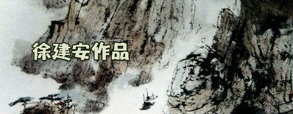

|  | |
|
古今文獻 2005年
嶺南:文化地理歷史考載
嶺南易名廣東之緣由
旅越花縣 畢柱基 又名徐建安 簡稱徐安編錄
嶺南三千年前，古名南蠻，緣稱南方未開發之蠻荒世界，聽不洎漢人二百萬先後南遷，聚族而居，開發珠江三角洲後，因地處江西省邊沿之大庾山，有五嶺通道之南面，故易名嶺南！（江西省與廣東省邊沿之大庾嶺的五嶺名稱：大庾嶺、騎田嶺、萌渚嶺、都龐嶺和越城嶺。）據史載自周夷王八年（公元前 887年），漢人陸續由中原──山東、山西、河南、河北……陝西之南，甘肅之東，遷徙至中南各方州郡（古代尚未設省治），特別係遷至珠江三角洲（廣州）一百萬眾，尤其河南漢人南下沿居珠江一帶為數首眾，所聚族而居就形成了廣州墟市大集，及後公元前 214年，秦始皇曾在九年間，前後兩次共派遣一百萬漢軍南下屯守嶺南，從而結合之前一百萬漢人，所共有二百萬漢人聚族而居於廣州一帶！故粵人有足夠實力條件保守其祖先中原漢語言暨聲韻音調毋差！誠：粵語係正宗古代漢語一脈相承，貫徹演進致今日，不爭之鐵證事實！ 何況世界三國越、日、韓，前曾經用漢文化，今雖萬變不離其宗，目前尚保留許多漢語漢音，並與廣州語音幾乎一致無異！實同出一轍源流的祖漢文化及語音！此又一史實鐵證如山！更者倘以粵語朗讀古文與唐詩者，則神韻無比逼真、傳神，貼切於其漢祖宗的聲音！正緣一脈相沿之憑證！故云：粵語即是正宗古代中原漢語辭暨漢音韻之優雅清脆悠揚！蓋有一重要關鍵證明：華夏慘重自一千八百年前，「中原陸沉」於晉朝末葉以來，漢族曾淪陷三次失國而不亡國。一為晉末之五胡亂華，一百九十五年之久。二為七百二十年前，元朝蒙古統治八十三年。三為三百五十年前，滿州統治二百六十七年。前後三次間斷性淪為外族統治中原共五百四十五年長，雖然萬變不離其宗，反而融合同化成一體大漢族──中華民族！憑的是精心博大，萬有引力之漢文化所造就貫通！誠有容乃大，唯獨是中原漢語音腔調，都成荒腔走音，已非漢唐明朝以前的純正漢音也！故碩果僅存的正宗漢語、漢音，當係嶺南廣州一帶！應毋庸議！實可作考古正統漢文化之現存地！猶係發揚光大，承先啟後，演進精華漢文化寶藏！ 廣東原名嶺南於一千年前宋朝時，因開闢特別廣大之嶺南東面為國家道路，故名。廣南東路，又至七百廿年前元朝時改名廣東道，遂得名廣東。續後喚成地方名而漸變嶺南之稱號。直到三百年前，清朝才開始全國分設省治而名廣東省，唯民間尚稱嶺南。 廣東省（嶺南）三百年來前後行政區域分野：（雖歷經增刪更易或復原，唯萬變不離其宗，乃今古同源，應始終如一，免始亂終裂，造成族群內部矛盾，以一貫性為萬策，故以此作主體論。） 九州：廣州，（五羊城，羊城，穗城，又分設六區：老城、新城、東關、南關、西關、河南。）惠州，潮州，瓊州（海南島），嘉應州（梅州），高州，雷州，欽州，廉州。（州，即由省份劃分多個地域稱為州） 十府：廣州府，肇慶府（高要），惠州府，潮州府，瓊州府，嘉應府，高州府，雷州府，欽州府，廉州府。又俗分上六府下四府（下四府係高雷欽廉）。（府，即州的行政機關，蓋九州應該九府才對，緣廣州為全省之首府機關，乃集中文化、經濟、軍事、政治，以及人口眾多之地區，而行政處理頗繁忙，故另分設多一府輔佐全省的政務，爰九州才有十府之設立。又海外僑社組織有廣肇公所，廣肇學校，廣肇醫院等等名號，皆由廣州府與肇慶府之兩府人士，所代表連合組成之稱謂。）府即官府衙門，今名區公所兼警局。 九十九縣：番禺、南海、順德、東莞、從化、龍門、台山、增城、中山、新會、三水、清遠、寶安、花縣、佛山、赤溪、高要、四會、新興、高明、廣寧、開平、鶴山、德慶、封川、開建、恩平、羅定、雲浮、鬱南、曲江、南雄、始興、樂昌、仁化、乳源、英德、翁源、連縣、陽山、連山、澄海、惠陽、博羅、新豐、紫金、海豐、陸豐、龍川、河源、和平、連平、潮安、豐順、潮陽、揭陽、饒平、惠來、大埔、普寧、南澳、梅縣、五華、興寧、平遠、蕉嶺、茂名、電白、信宜、化縣、吳川、廉江、海康、遂溪、徐聞、陽江、陽春、瓊山、澄邁、定安、文昌、瓊東、樂會、臨高、儋縣、崖縣、萬寧、陵水、感恩、昌江、樂東、保亭、白沙、欽縣、防城、合浦、靈山、連南、梅茂。 （縣，即由州分支多個小區域稱為縣，又縣以下再分為鄉、村 、邑、里、舍。） 羊城（廣州）矗立己二千二百二十年之邃邈綿亙時光，以公元2000年為準算，即廣東漢人已經濟發達二千二百二十年，蓋足具實力建設此偉大城市，由於經濟促進文化造就文教正確精闢，文法修辭合理演進，故嶺南漢文化歷久粹礪，精華極致，發揚光大，開明先進於國人之上！在廿世紀六十年代中，雖則文化遭短暫政治破壞，惟獨是嶺南漢文化沉積久遠，根基深厚，卓卓程度，在短時間迅速恢復原貌及躍升邁進，何況萬幸「禮失而求諸僑胞」之補強！ 再者，中原土地貧瘠，農耕艱辛，生活勞碌困苦，形成民生自顧不暇，故不善鑽研文化之修飾改良，而至芻芻創造出之文化尚不足成熟完美，瑕疵重重，洎及嶺南，緣土質肥沃，物產富庶，連年耕稼豐收，經濟發達，民生富裕，促就民間優悠好學，文風鼎盛，深入考究修辭，改進詰詘聱牙、深蕪晦澀之古漢文化。爰嶺南漢文化造詣提升真、善、美巔峰。無論文理、詞藻、聲感，俱達先進前鋒，出類拔萃，佼佼超群的開明精華漢文化！［文化非短期數十載能精進，古云：十年樹木，百年樹人！文化係累積漸進，歷百千載砥礪方竟全功，反之，經濟可短時發達起飛，當文化無與經濟同步並駕齊驅，則造成民眾思想行動膚淺、幼稚、無知、忘本，而恃才傲世，自大疹狂妄，毋羞恥慚愧感！無宗旨立場論！沒是非對錯觀！缺倫理道德念！罔思源認祖心！文化胡攪敗壞，低俗當高雅；侮辱當恭維！文理矇昧，措詞曖跩，約定俗成民粹思想；盲從附和侏儒文化！此為「書不精讀無以致義理之明，文不成誦無以致思索之功！」更害者易淪於賣國求榮，動亂社會，輕使敵對掌控滅國。欲亡其國，先毀其文，國教之咎！何辭？故有文化即有將來，有國族倫理，有一切事物；毋文化不啻無將來，豈遑論祖國、家族、其他！］蓋：中華乃曠古優秀文化，數千載光輝文明，創世科學鼻祖承道德禮義之邦，和平之族，忠孝之民，倘弗當即正風，不啻貽笑大方？更甚敗亡五千年精華文化文明！終及亡國毀族賤民之族痛否！ 嶺南：「客家名稱」源遠流長，輾轉遞嬗，參差縱橫，轇輵複雜，古代中原唯一漢族別無他族名。（蓋歷史上事物名稱，往往錯誤流傳，皆由時勢、空間、人物，交互倉卒變遷，而文化上的認知模糊所產生誤稱、誤認，實為亂世、環境、人事，錯綜複雜之咎也！） 至於福建省亦有「客家」之故者，見仁見智，人云人異！唯其來源據理推斷，俱係在嶺南之客家人再輾轉遞嬗，流動到福建或其他省立足。倘若漢人直接從中原遷徙到福建之說，誠無與同嶺南客家此等稱號，因地域有別，方言不同，其稱呼亦各異。所謂：各處鄉村各別處例！故閩客實係粵客所分支歟！否則，「粵客」與「福客」，何來語音同出一轍的接近。何況中原實際並無「客家」之族名，完全是後期晚到嶺南之中原漢人，當時陰錯陽差，被先期遠年所到嶺南的漢人後代自許為主人，無意間誤解誤稱所冠以後期中原新到客人家族群眾為客家人之名。由此以訛傳訛，積非成事是，而後來者潛意識地悠然自以身為客人！如此族號漸隨傳播到別處，從此福建方才有同一稱呼之「客家人」！再者，梅縣客語和粵語更是同出一家相似，反之，客語和閩語可無共通處，那有相類點？由此證實福建的客家確實先前從嶺南轉折過去的「客人」！所以，福建客家即是嶺南漢人──廣東「客家人」！其他省份私客家人也等同此理演變。 例如：台灣的客家即同此事實源流，由廣東過台灣！故云：廣東人在台灣實有數百萬之眾，應毋庸議！不以為奇！綜合全球「客家」俱從廣東開源過埠──粵人全係中原漢人後代！（總括粵人在海外全世界有三千萬數，其他省士約五百萬，換言之，海外華人約三千五百萬人！） 廣東，別名粵，古儒造字係根據廣東土地肥沃，乃魚米之鄉，田野密麻無際，故粵字首端為一方塊田地形，內藏富饒之穀米，而外形則加一撇一劃一彎鈎者，即代表田間小路阡陌縱橫之形象，也就是粵字的表徵與內涵！ 漢音粵續＊宗語南承 中華文化誰執重，嶺南漢語第一峰； 卅多省士古聲變，唯獨粵漢語音同， 生活文化日常見，豈容自我冠號封， 成諺俗俚文詞比，孰是孰非露真容。 漢唐真韻今何在？野史典故可尋踪！ 韓愈東坡曾稱許，一脈相承唯粵東。 洞悉修辭精進美，獨特嶺南漢文工， 粵音漢韻中原語，原來都是漢唐風！ 證徵可察粵語腔，再賞曲藝雅詞隆； 出口成章入口文，平常百姓話詩諷， 漢系三國越日韓，文化神韻粵相擁， 識越懂韓曉日話，一旦豁然貫通頌。 內外考證俱足據，中華文化嶺南宗！
古代嶺南乃百越民族聚居之地域（大部份習慣居住在森林和山區，蓋其民族以狩獵為生，不喜歡在珠江三角洲之水草平原的濕地上生活，反而適合後來南遷徒置的漢人，以耕種稻米的水濕土地為宜）。 百越者：即歷史上統稱約百種少數民族的代表名號。包括：越（京）、傣、苗、傜、畬（佘民、山喀、山哈）、黎、僚（俚）、蛋（蜓）、僮（壯）、儂、侗、俅、回、哈尼、佧佤、傈僳、僬僥、僰撣、仡佬、保羅、水擺夷……等族，其生活在浙江之南，福建之南，廣東、廣西、雲南之地盤上。由於越族和其他數十個少數民族的風土民情，生活習性有類似的大同小異，更主要是越族在各數十個少數民族中最先接觸到輝煌文明的漢族，當受益於博大精深的漢文化所薰陶，成為文明先進於各少數族群之上。 常謂：近水樓台先得月，向陽花木早逢春！故漢史上以越族為代表其他數十個少數民族，統稱為百越民族。日久時深，逐漸自然同化於當時嶺南具高度文明之二百萬南遷的漢族為一體，誠有容乃大。（此為嶺南百粵人士的由來）。 又九十九縣漢人所處混雜各自不同之數十個少數民族間，幾經多次輾轉錯綜複雜的融合同化後，進而演變形成只有各地鄉村九十九縣漢人之另一種荒腔走調之漢語「土譚」，即方言。故有各處鄉村各處例，各處鄉音攏不來！就是說九十九縣漢人各自混雜當地不同的百越民族語音，而兌變成彼此差異的鄉音，故此各縣鄉的嶺南漢人在語言上互相難以沛溝通，唯一以省府廣州話為交往語言。 （再者，凡是由漢文化教育成長之各中、外、地方省縣之族群，當其用各別的方言講讀、朗誦、吟唱漢文字、詞章、詩歌時，明顯見到族群之間其漢語文都有相當接近，一致雷同（一雷天下響，各處同一聲音也）的發音和腔調，總體上相互類似漢音聲韻，祇要細心聽聞體驗，則立即意會神傳耳！瞭然於王理也！正是萬變不離其宗之原因！惟獨是傳統先祖之漢音韻暨語文，目前唯一僅存流通在廣州珠江三角洲一帶的粵語文、語音中，以及全世界三千五百萬華人中之三千萬粵人僑胞社會裡。實際國寶留存，值得考古發掘原來正宗的漢文化語文和漢音韻之碩果僅存寶藏地也！）緣分散雜居於九十九縣中之漢人，經常接近其他其他數十個少數民族的地盤上生活往來接觸及通婚，日久又因本身族群不大，故此容易混和雜音及荒腔走板本來祖宗的漢音！畢竟不如省府──廣州方圓一帶超眾多集中聚居的漢人，所能有足夠實力條件保守祖宗的漢語漢音。何況在省城周圍地區，也絕無僅有其他少數民族雜居，故亦無所謂受其生活習性和聲音語氣的沾染混雜及影響而質變與音變！歷時經過百越民族所融合同化為一大漢族的廣東九十九縣，加上一個省會首府五羊城（即目前廣州市），就稱百粵人士，而非古代未歸化的百越民族也！蓋以全國的方言統計而論，則廣東幾乎以九十九縣之方言為最多最複雜於國內各省的方言之上！雖則廣東省九十九縣方言頗複雜，但以廣州之漢語音話為統一的省語，又稱白話，換言之亦即奉承古代正宗中原漢語漢音為標準流通的語言！廣東三千年以來，中原漢人因躲暴政或戰禍，無奈不捨地陸續或間歇性大量遷徙南移至嶺南，尤其是絕大部份匯聚於珠江三角洲，前後為數二百萬人眾。當然國內遷徙中南方各州郡鄉野及偏遠邊陲地方，分佈廣泛皆有南遷漢人聚居生活，唯獨是珠流域乃水草平原濕笪笪之土地，得天獨厚，特別肥沃饒庶，而當地土著不善生活於水濕泥濘之原野，積習於山林野嶺打獵成俗，反而漢族是務農者，正適合水流汨汨的濕地，故先到之漢人幾經開拓耕耘，都穫至年年豐稔收成，更且尚有太多不暇開發之沃野，繼之呼戚喚友到來大家共同分享開發，由此正吸引著四方八面南下漢人，輾轉遞嬗，蜂擁而至，嶺南一帶就讀有二百萬之眾，乃由來有自，事出有因，並非獨鍾嶺南之故也！百數年後，漢人因具高度文明而自然融匯同化當地之百越民族 ，漸趨成為百粵人士為一體大漢族──大中華民族！ 此係百粵人士的前身，及後當此人際轉變過程中，更因古代交通閉塞，地緣生活隔膜，所造成各處地區人士另成一種口音腔調，民情性格有別，爰廣東衍生轉成四大族群：即廣府、客家、潮州、海南。其中客家一族之由來，乃古代由中原先到之漢人，歷經長久生活於斯後，悠然自許為主人，而稍晚到之漢人為客人，祇不過先來後到不同稱呼而已！所謂主流暨客屬的俗稱！蓋當時後到之少數漢人因城市擁擠，且城郊田野之耕地又多有農家耕著，土地並無空餘，無奈就遷移到偏遠的窮鄉僻壤或半山區之荒土開墾和搭建成各處村落。（當地多與少數民族近鄰，而相互間接觸及通婚，故日久的混雜竟致本身之中原漢音也逐漸荒腔走調，另成一體的所謂「客家話」漢語！）每當青年遠足至該地遊山玩水之時，頗愕然前所未有，何來如此多聚落？返城中請教有見地之長輩，當有識之士解說為：彼等乃後來之中原漢同胞的客人家族村落！無獨有偶古今同，因青年俱為無耐性之輩，最嫌別人說話長篇大論，累贅囉唆，反而自以為是，自作聰明，恁地縮短話句稱呼為：「啊！原來係客家人村落！」逐後年青輩互相傳揚，眾人隨和，將錯就錯，致使積非成是，以訛傳訛般傳播開去，而成為「客家」一族，實際上原先之意涵是：先到為主，後到為客之喻也！其實中原並無客家族的名稱！只是避難後到或聞風而至，被先到久居之漢人後代所誤道為客居他鄉的族群！正確而說，先來或後到者，主流抑客屬等，大家都是中原南遷之漢人。
|
|